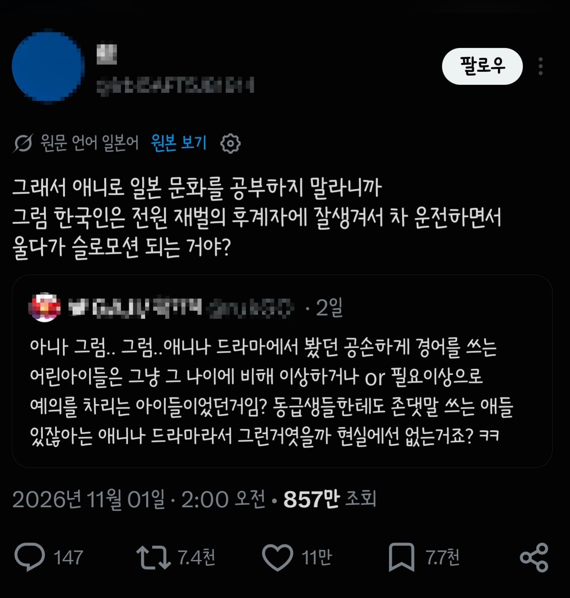

애니로 일본을 배운 한국인과 드라마로 한국을 배운 일본인

애니로 일본을 배운 한국인과 드라마로 한국을 배운 일본인
뭣 불패신화의R이 거짓이라고
일본남자들은 전부 한구레하다가 졸업하고 샐러리맨되서 블랙기업 들어간 다음에 야근에 시달리다가 덤프에 치여서 이세계암컷환생하는거 아니었어?
포켓몬 이거 없는거야?
그럼 피카츄는 뭔데
명탐정 피카츄 보면 실제 하잖아.
포켓몬은 현실이야 우리나라에 없는거.

요즘 혼다 타입r로 바뀜
학교축제 안해? 수학여행 안해? 유카타 불꽃놀이 안해?
8화쯤에 바다 안가? 신년 참배 안해? 방과후 활동 안해?
아 구라 치지 말라고 ㅋㅋ
??진짜 안해?
문화제 하는 학교도 있고 안 하는 학교도 있고, 하는 학교에서도 참여 안 하는 애들도 있고
지역 축제도 갈놈 가고, 노점은 맛없고 똥퀄인데 비싸서 안 사먹음ㅋㅋ
신년에 참배하러 많이들 가는데 사람 많은거 싫다고 안 가는 사람도 ㅈㄴ많음ㅋㅋ
부활동은 입시 반영이라 대입 할거면 빡세게함
아 모두가 가는게 아니구나 ㅁㅊ
부활동 ㅅㅂ 입시반영? 내 망상이 깨져버렸어
낭만은 고시엔 하나다..
??? 저거 다 섹스스팟인데 저걸안하면 어디서섹스해?
러브호텔에갑니다
그러니까 시골에 거유소꿉친구나 거유무녀님이나 거유신님이나 거유귀신이나 이런야스스토리가없다는거냐?
팔척귀신님은 있대
휴
거유 퇴계 이황
거유 율곡 이이는 실제로 있다는거임
카드배틀하는 도시가 없다고? 오토바이타고 질주하면서 배틀하는 도시가 없다고? 고대이집트의 신을 봉인한 카드가 없다고?
팬션이 놀러가면 갇히고 꼭 사람이 죽어 나가는 일이 일상이 아니야??
포켓몬이 없는거라고..??
시간 멈춘 후 여자 가슴 만지고 쑤컹하는 거 없다고?
그럼 일본엔 지하아이돌이라거나 그 지하아이돌을 매일 응원하려고 돈을 쓰는 아저씨들은 없는거야?
어? 그건 있지 않나?
휴 다행이다.
옆보기 구멍
최면 성노예
성처리 당번 없다고?

행님 폰트 뭐쓰십니까 정말 궁금합니다
한글 폰트입니다...!!
스쿨 아이돌이 허구라고?
재벌후계자랑 잘생긴거 뺴면 대충 맞습니다

일본의 젊은 청년들은 전부 GT-R이나 RX-7, 임프레자 같은 차를 타고다니면서, 밤마다 산길 공도레이싱을 취미로 삼는게 아니였어??